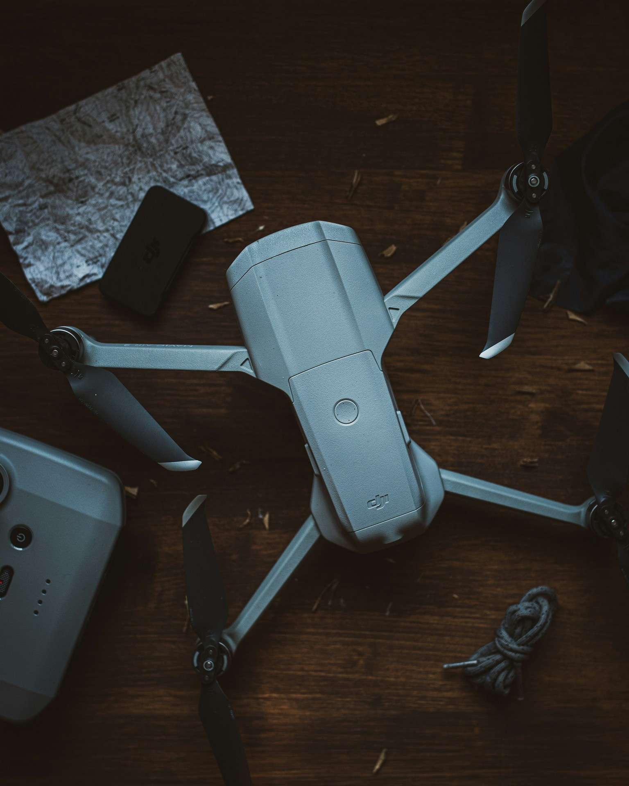

05 / DRONES
See the bigger picture.
Plan the right approach.
Aerial imagery can bring a different perspective to a property or project. Start with the purpose, the location and the information you need.
- Aerial imagery
- Discuss the views and visual material you need for your land, property or business.
- Property & infrastructure
- Explore whether aerial observation would help you understand a site or document an area of interest.
- Project suitability
- Any proposed flight work needs its scope, site permissions, conditions and operational requirements confirmed first.